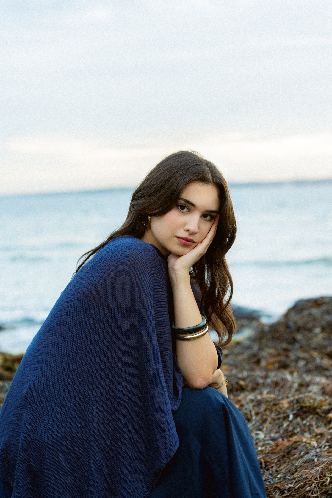
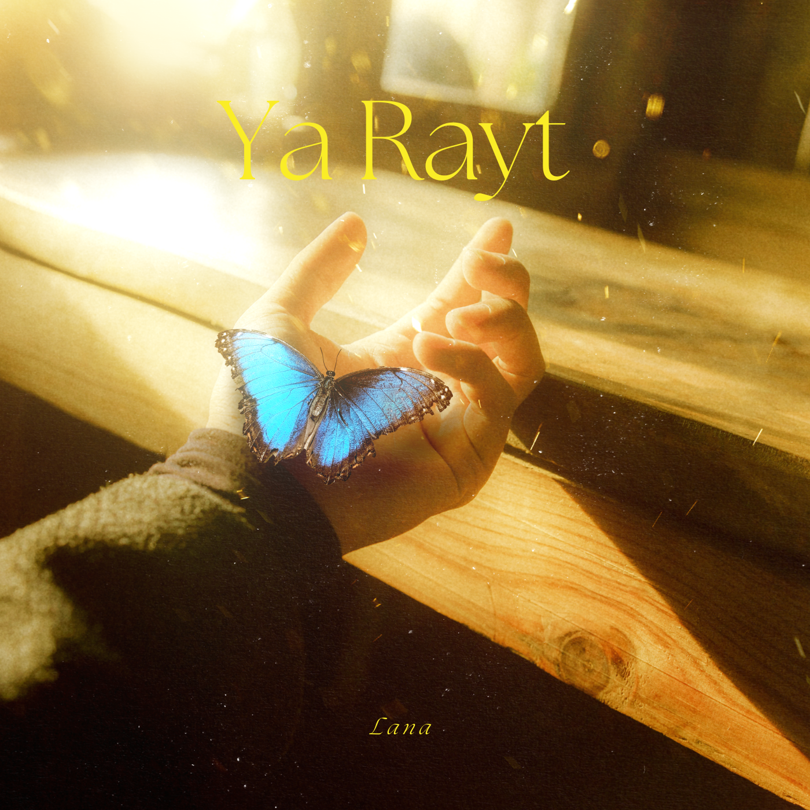
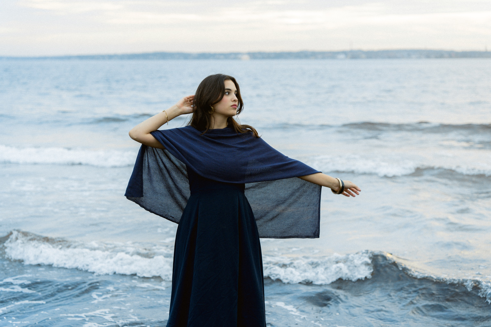

Syrian-Swedish Singer · Songwriter · Performer
LANA
Music shaped by memory, vulnerability and hope.

Latest Release
Debut Single
Ya Rayt
Lana Oudeh feat. Diab Mekari
Heartbreak and regret, the ache of having loved deeply and lost anyway.
0:58
3:12
Audience & reach
The music is finding its people.

Born in Damascus. Creating from Malmo.
About Lana
Two worlds, one voice
Lana is an artist from Damascus, now based in Malmö, who sings nostalgic Levantine pop in Arabic. Her music is rooted in the Levantine musical tradition, with a chanson feel to the melodies, and her voice is often described as dreamy, effortless and calming.
Music began as a way for Lana to sort out her feelings. As a child, when she lacked the words for how she felt, she listened, wrote and sang until things became clear. She has sung since the age of seven and has been on stage since she was 17, first at cultural events and restaurants in Malmö and Denmark.
Since then she has performed at Malmöfestivalen, Arena 305 in Malmö, the Arabic Culture Festival in Finland and Music Lab Festival in Berlin, as well as on stage in Damascus, and she appeared as a guest artist at the Barbican in London.
Her debut single, “Ya Rayt,” released in July 2026, explores heartbreak and regret: the ache of having loved deeply and lost anyway. It has already passed 2 million views on Instagram, with over 70,000 views on YouTube and more than 34,000 listeners on Spotify.
Running through her music is a longing for Damascus and the childhood she had there. Memory, place and cultural visual identity are central to her work, and she wants her songs to reflect the city’s beauty and culture.
Lana writes from instinct and feeling, and she is currently studying music to deepen her craft. Her voice is meant to give listeners what music once gave her: a way to feel better when words are hard to find. New music follows in autumn 2026.
“A dreamy voice carrying memory, place and longing.”
Music
Current Release
One song for now, held with enough space for the catalogue to grow.
Lana’s music begins here: intimate Arabic songwriting, cinematic restraint, and a voice that sits between vulnerability and hope.

Videos
Performances
Live
Upcoming Shows
November 21, 2026
Malmö
Sweden
Palestinian Film Festival
Details Soon
Gallery
In photographs
Artist Journey
From Damascus to stages across Europe.
From a childhood voice in Damascus to stages across Europe, Lana’s path has been shaped by one thing: music as a way to feel, and to make others feel, a little better.
Lana begins to sing. Music becomes her way of sorting out feelings when words aren’t enough.
She steps onto the stage for the first time, performing at cultural events and restaurants in Malmö and Denmark.
Guest artist at the Barbican in London.
Performs at Arena 305 in Malmö.
Music Lab Festival, Berlin.
Malmöfestivalen.
Releases her debut single, “Ya Rayt,” introducing her visual and sonic identity. It goes on to pass 2 million views on Instagram.
Returns to Damascus to perform on the Mishwar stage.
Arabic Culture Festival, Finland.
New music.
Live Setup
From an intimate piano set to a full band.
Lana performs in a format that suits the room, from an intimate solo piano set to a full band.
Intimate
Lana with a pianist. This is the minimum setup and works well for listening rooms, cultural events and smaller venues.
Full band
Lana with piano, electric guitar, bass and drums for festivals and larger stages.
Contact
Bookings, press, collaborations
For bookings, collaborations, press and other inquiries.